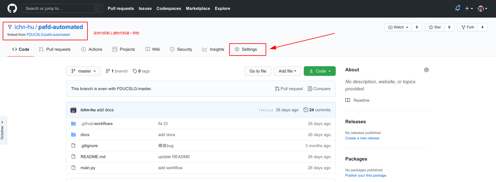

如何自动填写 PAFD！¶
如果你受够了每天都忘记填 PAFD 带来的痛（kuai）苦（le）

如果你再也不想为 PAFD 而烦恼
如果你希望每天都能填 PAFD
那么你来对地方了！
我们开源了一个自动填写 PAFD 的机器人，只需要你按照本文步骤完成操作，你就可以免费拥有它！
这个机器人可以在每天 10 点的时候自动登录 PAFD 并使用你上次填写时的位置自动上报，而所有你需要做的，只不过是动动鼠标完成配置~
心动的话请继续看下去~
步骤一：注册 GitHub 帐号¶
如果你还没有 GitHub 帐号，那么首先请先注册一个。
点击 Join GitHub 注册，填入用户名、邮箱和密码即可。
注意，如果你的网络环境不够好，在电脑上注册可能刷不出验证码，那么你可以尝试在手机浏览器中打开上述链接注册1，或者多试几次。
Note
如果你遇到了注册上的问题，欢迎到我们的 slack 频道中提问！使用学号邮箱点击 https://join.slack.com/t/fducslg/signup 注册即可！
步骤二：fork 机器人代码¶
GitHub 是一个代码托管平台，我们的开源 PAFD 机器人也托管在 GitHub 上。
点击 pafd-automated 打开我们的 PAFD 机器人代码仓库，然后点击右上角的 fork 按钮。

然后你就会发现，在你自己的帐号下也出现了一个一样的代码仓库，这就是你 fork 出来的、属于你的代码仓库。

然后点击上图提示的 Settings 进入设置页面。

然后我们来添加账户信息，用于 PAFD 打卡。点击 Secrets 然后点击 New repository secret，然后分别添加名为 STD_ID 和 PASSWORD 的两个秘密。
Name 为 STD_ID 的在 Value 里填入学号

Name 为 PASSWORD 的在 Value 里填入 UIS 密码（即学号密码）。这里可以不用担心安全性问题，在你 fork 的代码仓库下，这些密码只有你可以看到，其他任何人都不行2。因为背后是 GitHub 为你保障安全，作为世界上最大规模的程序托管平台，其安全性值得信赖。

添加完成后可以看到

步骤三：躺着等机器人自动帮你填 PAFD！¶
通过 GitHub Action4，每天十点会自动运行脚本帮你填写 PAFD，填写的地址是上一次的位置，从而你再也不用担心被辅导员催啦~
如果你按耐不住，想手动触发自动填写，可以来到 action 页面

然后按照图示的顺序点击自动触发 workflow，如果你上述配置是正确的，那么你就可以期待自动填写成功啦3！
如果你在这个过程中遇到任何问题，都欢迎来我们的 slack 群组中询问~使用学号邮箱点击 https://join.slack.com/t/fducslg/signup 注册即可！
如果你的网络条件足够好，你也可以在本页面下方看到一个评论区，你可以使用 GitHub 帐号进行评论~
最后
Warning
注意，本工具仅限于学习交流，顺便减轻忘记填写 PAFD 的麻烦。如果你身体有任何不适，或者去过有疫情风险的地区，请及时手动填写汇报，并向辅导员报备！本工具不承担任何因为特殊情况不及时报备而造成的风险。
-
实际上你自己也只有在填写的时候能看到内容，填写完成后，你也无法看到具体内容了 ↩
-
前提是你点击触发的当天还没有手动填过 PAFD ↩
-
GitHub Action 是 GitHub 推出的一款服务，可以做到定时运行脚本，本机器人所使用的 action 代码可见此，建议你可以尝试修改自动填写的时间，从 10 点改到 11 点或者任何一个时间，避免所有人都在十点填写，对学校 PAFD 服务器造成过大压力。改写方法为，进入你 fork 的代码仓库，找到
pafd-automated/.github/workflows/automate.yml文件，然后点击代码右上角的铅笔符号，修改文件，然后把cron: '0 2 * * *'中的2改成 其他 24 以内的数字（注意这里的 2 表示 UTC 2 a.m.，即北京时间 10 点，如果你改成 3 ，则自动触发时间就是北京时间 11 点） ↩